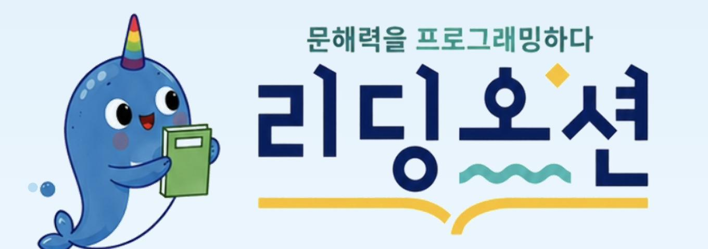
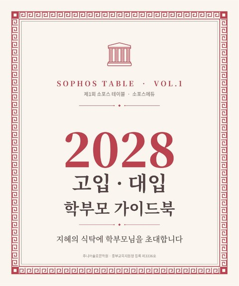

PROGRAMS
아이의 단계에 맞춘 과정
첫 상담에서 아이가 어떻게 읽고 무엇을 묻는지 살펴본 뒤, 맞는 과정을 안내합니다.

01
하브루타 정규반
읽고, 묻고, 쓰는 주니어솔로몬의 중심 과정
하브루타, 독서, 자기주도 학습으로 주 3회 수업합니다. 세 수업 모두 월 교습비에 포함됩니다.
하브루타 수업
짝과 함께 묻고 토론합니다.
문해력 집중 독서
8,000권이 넘는 학원 장서에서 골라 읽습니다.
문해력 자기주도 학습
솔로몬 QUEST 학습지로 스스로 익히고 점검합니다.
2027년 3월부터, 솔로몬 레벨(SL) 과정
천지인 한글
SL 0–2
그림책 철학
SL 3–5
이야기 철학
SL 6–8
인문 철학
SL 9–11
고전 철학
SL 12–14
학년이 아니라 읽기 수준에 따라 반을 정합니다.
무엇을 기르나요
책을 얼마나 많이 읽었는가보다,
한 권의 책 앞에서 얼마나 깊이 생각했는가.
주니어솔로몬은 좋은 책을 통해 세 가지 힘을 기릅니다. 정답을 빨리 찾는 힘이 아니라, 오래 붙들고 생각하는 힘입니다.
하나
깊이 생각하는 힘
좋은 작품을 골라 천천히 읽습니다. 작품에 쓰인 사실과 그에 대한 나의 해석을 구분해 말하도록 지도합니다.
둘
스스로 질문하는 힘
수업은 선생님의 질문이 아니라 학생의 질문에서 시작합니다. 책을 읽고 질문 세 개를 만든 뒤, 가장 묻고 싶은 하나를 고릅니다.
셋
생각을 표현하는 힘
짝 앞에서 근거를 들어 말하고, 다른 생각을 듣고, 필요하면 내 생각을 고칩니다. 대화로 다듬은 생각은 한 편의 글로 완성합니다.
수업은 이렇게 흘러갑니다
읽고, 묻고, 따지고, 씁니다.
1
함께 읽기
그날의 작품을 소리 내어 함께 읽습니다.
2
질문 만들기
궁금한 것을 질문으로 적고, 가장 묻고 싶은 하나를 고릅니다.
3
하브루타
짝과 마주 앉아 질문을 주고받고, 근거를 들어 묻고 따집니다.
4
글쓰기
대화로 다듬은 생각을 내 문장으로 씁니다.
5
나눔
쓴 글을 발표하고, 친구의 글에 한마디를 건넵니다.
한 반은 최대 8명, 보통 6명입니다. 모든 아이가 한 수업에서 자기 질문을 말하고, 자기 글을 씁니다.
일주일은 이렇게
토론하는 날, 읽는 날, 스스로 익히는 날.
토론만으로는 생각이 자라지 않습니다. 충분히 읽고, 혼자 익히는 시간이 받쳐 줄 때 토론이 깊어집니다. 그래서 세 수업을 한 과정으로 묶었습니다.
주 1회 · 초등 120분 · 유아 90분
하브루타 수업
같은 반 친구들과 정해진 요일에 만납니다. 한 권의 책을 두고 질문하고 토론하고 글을 씁니다.
주 1회 · 120분 · 예약제
문해력 집중 독서
8,000권이 넘는 학원 장서에서 책을 골라 읽고 독서 기록을 남깁니다. 선생님이 곁에서 지켜보고, 읽은 시간만큼 별 도장을 모읍니다.
주 1회 · 120분 · 예약제
문해력 자기주도 학습
12월부터 학원이 직접 만든 솔로몬 QUEST 학습지를 풉니다. 이번 주 뉴스와 언어·탐구 학습지를 학년에 맞게 받아 스스로 익히고, 시험에 통과하면 도장깨기 판에 도장을 받습니다. 혼자 끝까지 해내는 습관을 기릅니다.
독서와 자기주도 학습은 평일 오후 2시~7시, 토요일 오전 9시~오후 4시 가운데 편한 시간을 네이버 예약으로 고릅니다. 세 수업 모두 월 교습비에 포함됩니다.
글쓰기는 이렇게 자랍니다
한 번에 긴 글을 요구하지 않습니다.
충분히 읽고 대화한 결과를 기록하는 것이 글쓰기입니다. 낱말에서 시작해 한 문장, 200자 한 문단을 거쳐 논술까지 한 걸음씩 나아갑니다. 글자 수를 늘리는 것이 목표가 아닙니다. 짧은 글에 생각을 단단히 담을 수 있을 때 다음 분량으로 갑니다.
분기마다 성장 점검으로 지금의 자리를 살피고, 준비가 된 아이는 다음 단계의 반으로 옮겨 갑니다.
수업의 뿌리
2017년, 이촌동에서.
짝과 같은 글을 읽고 서로 묻고 답하는 유대인의 전통 학습법 하브루타, 매튜 립먼이 세운 어린이 철학(P4C), 그리고 「왜 그렇게 생각하니?」를 끝까지 이어 가는 소크라테스의 연속 질문. 주니어솔로몬은 이 세 가지를 하나의 우리말 수업으로 엮어 2017년부터 이촌동 아이들과 함께해 왔습니다. 세 방법은 특별한 날에만 꺼내는 것이 아니라 모든 수업에 들어 있습니다.
문제집은 조각이고, 책은 한 편의 생각입니다. 아이가 가지고 태어난 원석을 좋은 책으로 다듬는 일, 그것이 하브루타 정규반입니다.
교실의 설계
생각하는 뇌에는
당과 산소가 필요합니다.
묻고 답하고 다시 묻는 수업에서 아이들은 머리를 많이 씁니다. 뇌가 일하는 데 꼭 필요한 두 가지, 당과 산소를 교실에서 먼저 챙깁니다.
당 · 궁금이 박스
수업을 마치면 아이들은 「궁금이 박스」에서 캔디나 젤리를 하나씩 뽑습니다. 배움은 달콤하다는 것을 몸으로 기억하게 하고 싶었습니다. 처음 글을 배우는 아이에게 꿀을 맛보게 했다는 유대인의 옛이야기에서 얻은 생각입니다.
산소 · 창문과 환기
교실을 설계할 때 모든 교실에 창문을 냈습니다. 수업마다 창을 열어 환기하고, 신선한 공기 속에서 수업합니다. 바깥의 나쁜 공기에 대비해 로비에는 공기청정기(IQAir)를 두었습니다.
아이가 오래 머무는 학원이라면, 그 교실에 창이 있는지 한번 살펴보세요.
02
리딩오션 문해력
리딩오션 동부이촌점

읽기의 기초 체력을 다지는 문해력 수업입니다. 첫 수업과 독서 능력 진단으로 시작해, 4주 단위로 이어 갑니다.
대상
한글을 읽고 쓰는 7세부터 중3까지
수업 시간
평일 오후 2시–7시 타임
왜 리딩오션인가요
많이 읽는 아이보다,
제대로 읽는 아이로.
책을 싫어하는 아이는 대개 자기 수준에 맞지 않는 책을 억지로 읽어 온 아이입니다. 리딩오션은 지금 아이의 읽기 수준을 먼저 재고, 거기에 맞는 책부터 정독하게 합니다. 읽은 내용을 문제로 확인하고, 글로 써서 내 것으로 만듭니다.
리딩오션에듀는 경기·서울·광주 교육청의 독서교육시스템을 만든 (주)레듀텍의 학원 전용 독서교육 프로그램입니다. 주니어솔로몬은 이 프로그램을 리딩오션 동부이촌점으로 운영합니다.
이렇게 읽습니다
재고, 고르고, 읽고, 확인하고, 씁니다.
1 · 재다
독서능력진단검사
초등 국어 교과서의 어휘와 문장을 기준으로 만든 검사입니다. 독서지수를 141구간으로 나누어 알려 주고, 강점과 약점을 결과 리포트로 보여 줍니다.
2 · 고르다
수준별 맞춤 도서
교과 수록 도서, 국내외 수상작, 교육청 선정 도서, 기관 추천 도서 가운데 지금 내 수준에 맞는 책을 고릅니다.
3 · 읽다
정독
훑어 읽지 않고 깊이 읽습니다. 선생님이 곁에서 바로 코칭하고 피드백합니다.
4 · 확인하다
독서미션
OX 퀴즈, 낱말 퍼즐, 매칭 게임 같은 독후 문항으로 읽은 내용을 다시 짚습니다. 결과는 학부모님 카카오톡으로 바로 갑니다.
5 · 쓰다
글쓰기
내용 요약, 나와 관련짓기, 사회와 관련짓기, 가치 판단, 찬반 주장으로 생각을 넓혀 씁니다.
새로 더했습니다
글봇쌤
AI 논술 평가·첨삭
리딩오션 동부이촌점은 레듀텍의 초·중·고 AI 논술 평가·첨삭 프로그램 「글봇쌤」을 함께 씁니다. 아이가 쓴 글을 바로 평가받고, 고쳐 쓰기로 이어 갑니다. 서·논술형 평가가 늘어나는 학교 시험을 미리 준비하는 힘이 됩니다.
동부이촌점은 다릅니다
솔로몬 안의 리딩오션.
8,000권의 서가 곁에서
리딩오션 수업은 주니어솔로몬의 장서 8,000여 권이 둘러싼 공간에서 이루어집니다. 책이 가까이 있는 곳에서 읽는 습관이 자랍니다.
하브루타로 가는 길
2027년 3월부터 하브루타 정규반은 리딩오션으로 읽기의 기초를 다진 학생부터 들어갑니다. 리딩오션은 솔로몬 수업의 첫걸음입니다.
석 달마다 다시 잽니다
3·6·9·12월 독서능력진단검사로 읽기 수준이 어떻게 자랐는지 확인하고, 다음 책의 단계를 정합니다.
이용 안내
대상
한글을 읽고 쓰는 7세부터 중3까지
시간
평일 오후 2시–7시 타임
시작
첫 수업과 독서능력진단검사
등록
4주 단위
리딩오션 동부이촌점 · 서울 용산구 이촌로 200 LG프라자 403호(주니어솔로몬 안)
03
소포스에듀 중고등
주니어솔로몬 다음 단계, 중고등 전문 프로그램

소포스에듀가 하는 일
아이를 시스템에 맞추지 않습니다.
지금의 교육 환경에서 지금 이 학생에게 무엇이 가장 필요한지를 먼저 묻고, 그 답에 맞춰 수업을 차립니다. 모두에게 같은 상을 차리는 대신, 한 사람 한 사람에게 맞는 식단을 짭니다.
소포스에듀 대표 장화연
소포스(σοφός)는 그리스어로 ‘지혜로운 이’라는 뜻입니다. 주니어솔로몬에서 읽고 묻고 쓰는 법을 익힌 학생이, 중·고등의 시험과 입시 앞에서도 그 힘을 잃지 않도록 이어 가는 곳입니다.
무엇을 배우나요
고전 독서토론
고원재 · 고전은 원래 재미있다
동서양 고전을 원전에 가까운 글로 읽습니다. 읽기 전에 → 본문 읽기 → 상징과 비유 → 하브루타 → 주요 장면과 쟁점 토론 → 원고지 글쓰기로 이어집니다.
국어 · 서·논술형
쓰기 전에, 읽기부터
서·논술형 평가는 결국 읽은 만큼 씁니다. 문학과 비문학을 깊이 읽고, 근거를 갖춘 답안과 논술로 정리합니다.
학교 시험
내신 대비반
학교 시험 기간에는 내신 대비반을 따로 엽니다. 시험 범위에 맞춰 짧고 집중해서 준비합니다.
글쓰기의 목표
개념을 풀어 쓰는 글에서, 서론·본론·결론을 갖춘 논술까지.
800자
고전의 핵심 개념을 내 말로 풀고, 근거를 들어 내 생각을 씁니다.
1,000자
저자의 주장과 근거를 분석하고, 반론까지 다룹니다.
1,200자
서로 다른 고전을 견주어 내 주장을 논술로 세웁니다.
수업에는 독서와 자기주도 학습 시간이 함께 붙습니다. 읽고, 혼자 익히고, 토론하는 흐름은 주니어솔로몬과 같습니다.

선착순 10부
SOPHOS TABLE Vol.1 자료집을 드립니다.
고입·대입 학부모 질문 TOP 10, 2028학년도 수능 국어·수학 변화, SOPHOS PRIVATE 겨울 소수정예 과정까지 담은 학부모 가이드북입니다. 소포스에듀 입시 컨설팅을 신청하신 분께 드리며, 10부가 모두 나가면 마감합니다. 응원 문장 볼펜과 L파일도 함께 드립니다.
문학으로 마음여행
장화연 원장 직강 하브루타
생각의 실험실
장화연 원장 직강 비문학 사고력
리딩오션 겨울 무제한반
방학 동안 매일 읽는 집중 독서
소포스 프라이빗
중고등 국어·수학 소수정예 코칭
1세션 1/11–1/22 · 2세션 1/25–2/5 · 3세션 2/15–2/26
특강 포스터 보기 →